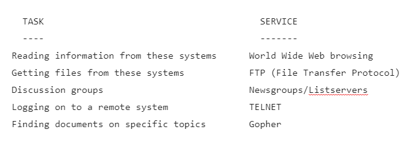
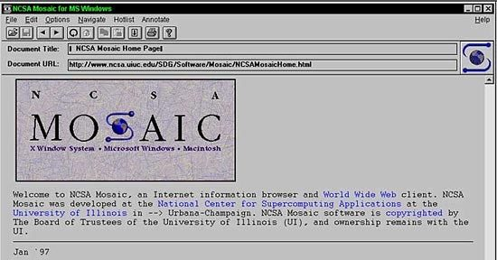
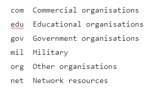

Going way back today. As the original said: Copyright © David Sidwell 1996
Topics
In this document, we’ll take an informal look at the Internet. We will cover:
- What is the Internet?
- The Main Things:
- Electronic Mail
- Web Browsing
- Access to PC programs etc
- Newsgroup Discussions
- Other Internet functions (IRC, Telnet etc)
The intended audience is the folk who have had some exposure to PCs, but little or no experience with the Internet.
What is the Internet?
Technically it’s a whole lot of computers that are all linked up together and all speak the same language. They range from PCs to mainframes to supercomputers. They computers themselves live in schools in Norway, libraries in Washington DC, nuclear labs in Switzerland and CD-ROM stores in California. And in many, many more places.
The Internet is really a huge connection of computers on their own networks. In turn, these networks are all connected. The result is that these computers are all Interconnected. The term “Internet” is a cutdown version of the phrase “Internetwork”.
Using the an ISP (Internet Service Provider) your PC becomes a full member of this huge electronic community.
From a practical point of view, this means you have access to literally thousands of different systems (sites), all over the world and at very low cost.
So, practically it’s millions of millions of bytes of great information you can retrieve (Web Browsing, FTP and Gopher). It also allows you to communicate with individuals (electronic mail), take part in group discussions (newsgroups) and sign-on to the systems (telnet). We’ll cover these in greater detail later on.
The Main Things
I’m told that the biggest use of the Internet is for email. With some 30 to 40 MILLION users (and growing) you can get lots of electronic pen friends
Other uses are:

Let’s have a look at some of these in greater detail now.Electronic Mail
Or ’email’. You are given an electronic email ‘address’ that is unique in the world. It may be something like davids@melbsys1.ibm.com.au (if you want more information on how these names work, then please see Internet Names and Addresses)
Nearly every other user on the Internet has their own email address. You can send and receive email to/from all these users.
They do not have to be using the same system as you (that is, they do not have to be using the IBM Internet Connection).
The email system is like the post office; once you have ‘posted’ the email you can exit the Internet Connection. The email message is sent up through the various networks to its destination ‘mailbox’. The recipient does NOT have to be logged on (online) to receive it. They simply get the mail next time they connect.
Web Browsing
Also known as “Surfing the Net”
A lot of these thousands of systems (sites) on the Internet take part in the World Wide Web. These systems all have information on a whole galaxy of topics, stored in electronic documents that you can easily access. You can take a tour of Paris, visit an Art Gallery, get the latest pictures from NASA, view documents from the Russian archives, read a magazine, go shopping, access corporate information or just have fun.
To properly access these systems you need a MultiMedia WebBrowser on your PC (such as OS/2’s WebExplorer, Netscape, Mosaic etc). These all enable you to see the wealth of graphics (pictures) on the Web. They also let you hear the sounds. And view the movies.
The Web is built on “hypertext”. This means that you simply use your PCs mouse and click on the highlighted text within the electronic-document you are viewing. This will take you to another document. It may be on the same system; or it may be halfway across the world in Texas. You don’t care as you are not paying the International telephone charges to access Texas – just the standard IBM Internet rates (plus your local phone call charges, of course)

Image not in original article. Sourced from here.Access to PC programs etc
Technically this is File Transfer Protocol (FTP). There are many sites out there on the Net that contain “free” PC software (most of it is Shareware or Freeware). You can get a copy of the latest game, try out that disk searching program or get a useful label printing program.
(Shareware is usually not ‘free’ as such. It works on the principal that you are using the software, no charge, for a trial period. If you continue beyond this period, you are requested to send money to the author to ‘register’ your copy. This may entitle you to support/help, receive updates, get manuals or whatever)
The modern Web Browsers can call up FTP as part of their own operations. This means you can hunt for all PC programs that (say) teach you how to speak Spanish. Once a list is found, you simply click on the programs name and a copy is downloaded to your PC.
If I want to retrieve a file off the system called nasa.usa.gov.usa I use FTP to link up to nasa.usa.gov.jpl.
The beauty of FTP is that all remote systems look the same. By that, I mean it doesn’t really matter if the remote site is running Unix, OS/2, OS/400, VM, MVS etc etc. The FTP environment looks very much like PC DOS.
So we use commands like DIR, CD. To copy a file from the remote to our system, we just use GET. FTP supports long filenames (this comes from Unix). So files may have names like HistoryOfSocks.In.Britian.TXT (they are case sensitive too)
So we just issue “get HistoryOfSocks.In.Britian.TXT” and hit Enter. The file is copied from the remote system direct to to my local PC’s disk. A lot of the modern FTP programs let you use a mouse to ‘point and shoot’ which files you want and where they should be copied to. You can also copy files FROM your PC to another system, if that FTP system allows it.
The files can be text or binary. Binary files tend to contain programs or images.
So FTP lets me get text files as well as programs. There are thousands of FTP sites. Each may have hundreds of files.
Newsgroup Discussions
Imagine a magic document. What makes it special is that when you write something to it, nearly everyone on the Internet can see what you’ve written. In turn, when another person writes something (which may be in response to what you’ve added), everyone, including you, can see their words. They could also electonically-glue a program to the document and the other folk can use that program too. Or they could attach a picture, or some sounds or a any PC file.
This is the essence of the Newsgroups. And there are thousands of them.
Newsgroups are really like electronic discussion forums, but they adopt a clever technique to make them easy to use.
There might be a Group for those interested in the TV show Twin Peaks. (there really is – it is called ALT.TV.TWIN-PEAKS). It is really a master file kept somewhere (we don’t need to know where). Your local news-provider (like us at IBM) can choose to ‘shadow’ this Group What this means is that a COPY of the Master file is kept on our system. Whenever someone adds something to the Master, our COPY is also updated.
It also works the other way. I can put an entry (a “Post”) into our copy of ALT.TV.TWIN-PEAKS. It may be a comment or a question..doesn’t matter. The magic thing is that the Master is then updated with my Post and therefore all copies throughout the world get my Post added in. In turn, a person in Egypt may ‘respond’ to my Post via his copy and the whole thing goes on from there.
There are thousands of newsgroups. From the serious (sciences) to the kinky. From music to movies. You can even start your own.
You can use news-reading software to ‘subscribe’ to the Groups that interest you. This makes it easier as you only see the areas that (currently) interest you.
Usenet News is the real name for these Newsgroups. There are over 8000 Usenet newsgroups (discussion forums) available via IBM Internet Connection. They cover a whole range of topics, including Aussie Rules Football good grammar, the music of the Beatles, the best OS/2 programs, astronomy, movie reviews etc etc. The point being that you can not only READ, but CONTRIBUTE. But don’t forget, anything you type in will be seen by the millions of potential users who ‘subscribe’ to that particular Newsgroup.
Other Internet functions
You can also use the Internet Relay Chat (IRC) to send messages to other users ‘live’. That means that the receiver(s) get the message on their screen almost as soon as you send it; they have to be there to get the message.
The function called Telnet enables you log directly on to another computer on the Internet. You then become a ‘terminal’ or ‘screen’ on that system. A common example is to access the Electronic Catalogue of a public library.
The curiously named Gopher is like a forerunner to the World Wide Web and it’s browsers. It enables you to quickly and easily search for items via a Menu-driven program. Most Web Browsers now allow you to directly Gopher-sites, rather then use a special Gopher program on your PC.
The wonderfully named Ping is a fairly simple, but very useful program. If you want to see if you can communicate with a particular Internet site, the Ping program sends a simple ‘are you there?’ type message to the site. If you can ‘get through’ to this site, it returns your Ping, effectively saying “yep, I’m here…”How to connect on upYour best bet is to call us here at the IBM Internet Connection. From anywhere in Australia, just dial 132426 and ask for “Internet Marketing”
In a short time you’ll be joining the growing community of ‘cybernauts’ surfing the Web. You won’t believe what’s out there.
Internet Names and Addresses
(This is an optional section for those who want a bit more technical information)
For our purposes each of these computers thousands of computers on the ‘Net has a unique name. Just like your home has a unique phone number (but only in that ‘area code’ region..and even then, only within your country)
For example my phone number in Melbourne might be 999-9999. But there could be a person in Bendigo with the same (local) number of 999-9999. For me to get to them I’d add-on a prefix of 054 and dial 054 999-9999.
For my cousin in the UK to call the Bendigo number, they would add on the international dial numbers. Roughly speaking this would be 0011 61 054 999-9999. But for someone in Melbourne to call me, they just dial 999-9999.
The names/addresses of the computers on the Internet are very similar to this.
For example I dial-in to a system that may have the name of “melbsys1”. On that system I am the user “davids”. My full user name is therefore “davids@melbsys1” (most people say the ‘@’ as ‘at’ but it is written as ‘@’. You may have seen such email addresses on business cards etc)
Now the “melbsys1” computer may be on the IBM Internet connection. It, in turn, may be part of our larger world-wide network, which may be called “ibm”. So my expanded address becomes “davids@melbsys1.ibm”
In order to distinguish the type of organisation that IBM is, we would add a further suffix of “com” for Commercial. The common ones are:

So my address now becomes “davids@melbsys1.ibm.com”Finally, I am in Australia (“au”). In theory, there could be another “davids@melbsys1.ibm.com” in (say) the UK. To qualify things further, my universal email address therefore becomes: “davids@melbsys1.ibm.com.au”
Notice how things are backwards when compared to phone area codes; the things are added on the END of the address.
A person on the same system (“melbsys1”) would just send email to “davids”
Someone on the same IBM Network in Australia would send email to “davids@melbsys1”
Finally, a person at that school in Norway would send email to “davids@melbsys1.ibm.com.au”
**Note: **This is not a real email address; there is no melbsys1.ibm.com.au – but you get the general idea.
Original Published Date : 2020-05-31